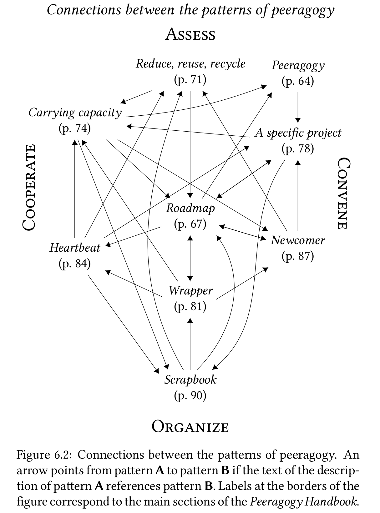

Patterns of Peeragogy
This chapter outlines an approach to the organization of learning that draws on the principles of free/libre/open source software (FLOSS), free culture, and peer production. Mako Hill suggests that one recipe for success in peer production is to take a familiar idea – for example, an encyclopedia – and make it easy for people to participate in building it [11]. We will take hold of “learning in institutions” as a map, although it does not fully conform to our chosen tacitly-familiar territory of peeragogy. To be clear, peeragogy is for any group of people who want to learn anything.1
A prototypical university. Caption reads: Wisconsin State University, Madison, Wis. 1879. Inset captions describe the pictured buildings: Ladies Hall, South Dormitory, University Hall, Assembly Halls & Library, North Dormitory, Science Hall, President’s Residence, University Farm, and Washburn Observatory. Public domain.
Despite thinking about learning and adaptation that may take place far outside of formal institutions, the historical conception of a university helps give shape to our inqury. The model university is not separate from the life of the state or its citizenry, but aims to “assume leadership in the application of knowledge for the direct improvement of the life of the people in every sphere” [8]. Research that adds to the store of knowledge is another fundamental obligation of the university [8]. The university provides a familiar model for collaborative knowledge work but it is not the only model available. Considering the role of collaboration in building Wikipedia, StackExchange, and free/libre/open source software development, we may be led to ask: What might an accredited free/libre/open university look like? How would it compare or contrast with the typical or stereotypical image of a university from the figure above? Would it have similar structural features, like a Library, Dormitory, Science Hall and so on? Would participants take on familiar roles [5]? How would it compare with historical efforts like the Tuskegee Institute that involved students directly in the production of physical infrastructure [7,19]? We use the word peeragogy to talk about collaboration in relatively non-hierarchical settings. Examples are found in education, but also in business, government, volunteer, and NGO settings. Peeragogy involves both problem solving and problem definition. Indeed, in many cases it is preferable to focus on solutions, since people know the “problems” all too well [2]. Participants in a peeragogical endeavor collaboratively build emergent structures that are responsive to their changing context, and that in turn, change that context. In the Peeragogy project, we are developing the the theory and practice of peeragogy.
Design patterns offer a methodological framework that we have used to clarify our focus and organize our work. A design pattern expresses a commonly-occurring problem, a solution to that problem, and rationale for choosing this solution [13]. This skeleton is typically fleshed out with a pattern template that includes additional supporting material; individual patterns are connected with each other in a pattern language. What we present here is rather different from previous pattern languages that touch on similar topics – like Liberating Voices [17], Pedagogical Patterns [3], and Learning Patterns [12]. At the level of the pattern template, our innovation is simply to add a “What’s next” annotation, which anticipates the way the pattern will continue to “resolve”.
This addition mirrors the central considerations of our approach, which is all about human interaction, and the challenges, fluidity and unpredictability that come with it. Something that works for one person may not work for another or may not even work for the same person in a slightly different situation. We need to be ready to clarify and adjust what we do as we go. Even so, it is hard to argue with a sensible-sounding formula like “If W applies, do X to get Y.” In our view, other pattern languages often achieve this sort of common sense rationality, and then stop. Failure in the prescriptive model only begins when people try to define things more carefully and make context-specific changes – when they actually try to put ideas into practice. The problem lies in the inevitable distance between do as I say, do as I do, and do with me [9]. If people are involved, things get messy. They may think that they are on the same page, only to find out that their understandings are wildly different. For example, everyone may agree that the group needs to go “that way.” But how far? How fast? It is rare for a project to be able to set or even define all of the parameters accurately and concisely at the beginning. And yet design becomes a “living language” [1] just insofar as it is linked to action. Many things have changed since Alexander suggested that “you will get the most ‘power’ over the language, and make it your own most effectively, if you write the changes in, at the appropriate places in the book” [1]. We see more clearly what it means to inscribe the changing form of design not just in the margins of a book, or even a shared wiki, but in the lifeworld itself. Other recent authors on patterns share similar views [15,16,18].
Learning and collaboration are of interest to both organizational studies and computer science, where researchers are increasingly making use of social approaches to software design and development, as well as agent-based models of computation [6,14]. The design pattern community in particular is very familiar with practices that we think of as peeragogical, including shepherding, writers workshops, and design patterns themselves [4,10,13].
Pattern template
The table below shows the pattern template that we use to present our patterns. Along with the traditional design patterns components [13], each of our patterns is fleshed out with two illustrative examples. The first is descriptive, and looks at how the pattern applies in current Wikimedia projects. We selected Wikimedia as a source of examples because the project is familiar, a demonstrated success, and readily accessible. The second example shows how the pattern could be applied in the design of a future university. Each pattern concludes with a boxed annotation: “What’s Next in the Peeragogy Project”.
| Pattern template |
|---|
| Motivation for using this pattern. |
| Context of application. |
| Forces that operate within the context of application, each with a mnemonic glyph. |
| Problem the pattern addresses. |
| Solution to the problem. |
| Rationale for this solution. |
| Resolution of the forces, named in bold. |
| Example 1: How the pattern manifests in current Wikimedia projects. |
| Example 2: How the pattern could inform the design of a future university. |
| What’s Next in the Peeragogy Project: How the pattern relates to our collective intention in the Peeragogy project |
A short motivating example
When one relative Newcomer was still in the onboarding process in Peeragogy project, she hit a wall in understanding the “patterns” section in the Peeragogy Handbook v1. A more seasoned peer invited her to a series of separate discussions with their own Heartbeat to flesh out the patterns and make them more accessible. At that time the list of patterns was simply a list of paragraphs describing recurrent trends. During those sessions, the impact and meaning of patterns captured her imagination. She went on to become the champion for the pattern language and its application in the Peeragogy project. During a “hive editing” session, she proposed the template we initially used to give structure to the patterns. She helped further revise the pattern language for the Peeragogy Handbook v3, and attended PLoP 2015. While a new domain can easily be overwhelming, this newcomer found A specific project to start with, and scaffolded her knowledge and contributions from that foundation.

| overview of problems and solutions in the pattern catalog |
|---|
| 1. Peeragogy |
| How can we find solutions together? Get concrete about what the real problems are. |
| 2. Roadmap |
| How can we get everyone on the same page? Build a plan that we keep updating as we go along. |
| 3. Reduce, reuse, recycle |
| How can we avoid undue isolation? Use what’s there and share what we make. |
| 4. Carrying capacity |
| How can we avoid becoming overwhelmed? Clearly express when we’re frustrated. |
| 5. A specific project |
| How can we avoid becoming perplexed? Focus on concrete, doable tasks. |
| 6. Wrapper |
| How can people stay in touch with the project? Maintain a summary of activities and any adjustments to the plan. |
| 7. Heartbeat |
| How can we make the project “real” for participants? Keep up a regular, sustaining rhythm. |
| 8. Newcomer |
| How can we make the project accessible to new people? Let’s learn together with newcomers. |
| 9. Scrapbook |
| How can we maintain focus as time goes by? Move things that are not of immediate use out of focus. |
References
-
Christopher Alexander, Sara Ishikawa, and Murray Silverstein. 1977. A Pattern Language: Towns, Buildings, Construction. Oxford University Press, Oxford.
-
A.T. Ariyaratne. 1977. Organization of rural communities for group effort and self-help. Food Crisis Workshop, Los Banos, Laguna (Philippines), 7-9 Feb 1977, 23–24. Retrieved from http://www.sarvodaya.org/about/philosophy/collected-works-vol-1/rural-self-help
-
Joseph Bergin, Jutta Eckstein, Markus Völter, et al. 2012. Pedagogical patterns: Advice for educators. Joseph Bergin Software Tools, New York.
-
James O Coplien and B Woolf. 1997. A pattern language for writers’ workshops. C++ report 9: 51–60.
-
J. Corneli and A. Mikroyannidis. 2011. Crowdsourcing Education: A Role-Based Analysis. In Collaborative Learning 2.0: Open Educational Resources, Alexandra Okada, Teresa Connolly and Peter Scott (eds.). IGI Global. Retrieved from http://oro.open.ac.uk/33221/1/corneli_chap_okada_book.pdf
-
J. Corneli, A. Jordanous, R. Shepperd, et al. 2015. Computational Poetry Workshop: Making Sense of Work in Progress. In Proceedings of the Sixth international conference on computational creativity, ICCC 2015, Simon Colton, Hannu Toivonen, Michael Cook and Dan Ventura (eds.).
-
Joseph Corneli, Dorota Marciniak, Charles Jeffrey Danoff, et al. 2014. Building the Peeragogy Accelerator. Proceedings of OER14: Building communities of open practice. Retrieved from http://metameso.org/~joe/docs/Building_the_Peeragogy_Accelerator.pdf
-
Merle Eugene Curti, Vernon Rosco Carstensen, Edmund David Cronon, and John William Jenkins. 1949. The University of Wisconsin, a history: 1848-1925. Univ. of Wisconsin Press.
-
Gilles Deleuze. [1968] 2004. Difference and repetition. Bloomsbury Academic, London.
-
Neil B Harrison. 1999. The Language of Shepherding. Pattern Languages of Program Design 5: 507–530.
-
Benjamin Mako Hill. 2013. Essays on Volunteer Mobilization in Peer Production. Retrieved from http://dspace.mit.edu/handle/1721.1/86240
-
Takashi Iba and Iba Laboratory. 2014. Learning Patterns: A Pattern Language for Creative Learning. CreativeShift Lab, Yokohama.
-
Gerard Meszaros and Jim Doble. 1998. A pattern language for pattern writing. Pattern languages of program design 3: 529–574.
-
Marvin Minsky. 1967. Why programming is a good medium for expressing poorly understood and sloppily formulated ideas. In Design and Planning II-Computers in Design and Communication. 120–125.
-
PLAST Collective. 2015. The PLAST Project: Pattern Languages for Systemic Transformation. Spanda Journal VI, 1: 205–218.
-
René Reiners, Ragnhild Halvorsrud, Aslak Wegner Eide, and Daniela Pohl. 2012. An approach to evolutionary design pattern engineering. Proceedings of the 19th Conference on Pattern Languages of Programs.
-
Douglas Schuler. 2008. Liberating voices: A pattern language for communication revolution. MIT Press, Cambridge, MA.
-
Till Schümmer, Joerg M Haake, and Wolfgang Stark. 2014. Beyond rational design patterns. Proceedings of the 19th european conference on pattern languages of programs, ACM, 13 pp.
-
Booker T Washington. 1901. Up from slavery. Doubleday & Company, Inc.